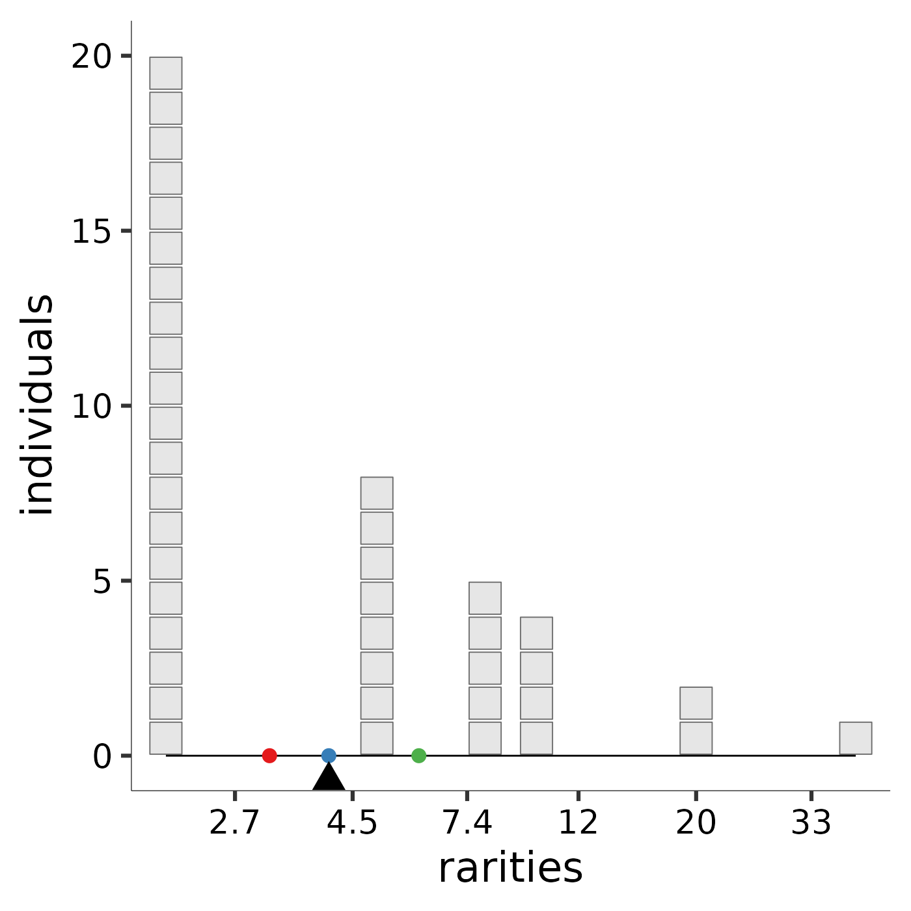
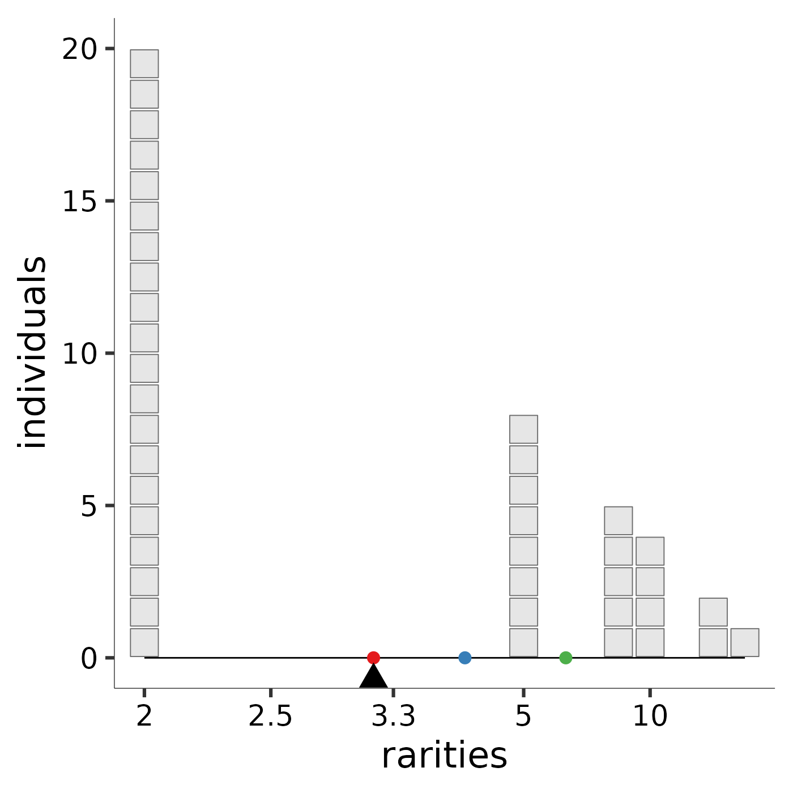

rarity_plot.RdThis function takes the abundance vector, scaling exponent, and target means (Default the Pythagorean means), and returns a formatted 1-panel ggplot object.
rarity_plot(ab, l, q = NULL, means = -1:1, noco = 1, lines = FALSE, ...)A numeric vector of species abundances or relative abundances.
Scaling exponent for the mean, can be any real number.
Scalar, traditional Hill number scaling exponent, q = 1-l where l is the scaling parameter for the generalized mean. Can be any real number.
Numeric vector of scaling exponent values corresponding to reference (by default, Pythagorean) means.
Scalar, shrinks text and points if plotting multiple balance plots in a single plotting window.
Logical, should each individual be plotted as a "box" or should individuals be summarized simply as the height of a line segment.
Additional arguments passed to other functions.
Hill diversity, or "mean rarity," is the balance point for the community
along the rarity scale. The image produced by rarity_plot illustrates
this balance. Each block represents an individual: because Hill
diversities are weighted by abundance, the “mass” of each “block” is the same
regardless of species identity. Each individual’s x-axis value is given its
species’s "rarity," which is the reciprocal of its relative abundance. The
parameter l controls how rarity is scaled. A community’s balance
point along the rarity scale, pictured as a triangular fulcrum, is the mean
rarity, or diversity, of the community.
To ease comparison across scales, by default the Pythagorean means (https://en.wikipedia.org/wiki/Mean) are marked with reference points: the arithmetic mean with a rose dot, the geometric mean with a blue dot, and the harmonic mean with a green dot. The arithmetic scale provides high leverage to very rare species; although they carry little weight (few individuals), these species influence the mean a great deal because they sit far to the right of the rarity scale. The arithmetic mean rarity of the community is the Hill diversity when \(\ell = 1\), and is equal to species richness. The logarithmic scale provides less leverage to very rare species. Thus, the geometric mean rarity of the community is lower. The geometric mean rarity is also known as the Hill-Shannon diversity, or the Hill diversity when \(\ell = 0\). The reciprocal scale accords more leverage to low rarity values. Thus, the harmonic mean rarity, also known as the Hill-Simpson diversity, or Hill diversity when \(\ell = -1\), is much lower still. An interactive online application that enables users to specify species abundances and the scaling parameter is available at https://mean-rarity.shinyapps.io/rshiny_app1/
The scaling of various plot elements depends on the plotting device.
Rstudio's seems especially touchy based on window size. The defaults here
pertain to the standard 7"x7" plotting window given by quartz() or
pdf(). They also seem to play nice on the shiny app
https://mean-rarity.shinyapps.io/rshiny_app1/. Other window sizes or
devices may require tweaking.
This function depends on internal functions in the
MeanRarity package which can be accessed with ::: e.g.
MeanRarity:::scale_plot.
ab<-c(20,8,5,4,2,1)
# experiment with other abundance vectors!
# ab <- c(20, 15, 9, 3, 2, 1, 1)
# ab <- c(100, 20, 15, 9, 3, 2, 1, 1)
# ab <- c(50,30,20,0,0,0)
# ab <- c(4,3,2)
# ab <- c(20, 15, 9, 3, 2, 1, 1, 0, 0)
# ab <- c(200,100, 20, 15, 9, 3, 2, 1, 1)
# ab <- floor(exp(rnorm(50, 4, 1.5)))
richness <- rarity_plot(ab, 1)
#> rarity plot expects a square viewport (likely issues in the RStudio plotting device) and resizes points based on
#> min(dev.size() and noco (for number of columns).
#> Selecting lines = T will plot stacks of individuals as a line element,
#> which tends to be more robust to window size.
#> Setting lines = T may be the best way to deal with overplotting,
#> which results from several species with similar but not identical rarities.
#>
#>
#> [1] "diversity = 6" "community size = 40"
#> [3] "max observed rarity = 40" "min observed rarity = 2"
Hill_Shannon <- rarity_plot(ab, 0)
#> rarity plot expects a square viewport (likely issues in the RStudio plotting device) and resizes points based on
#> min(dev.size() and noco (for number of columns).
#> Selecting lines = T will plot stacks of individuals as a line element,
#> which tends to be more robust to window size.
#> Setting lines = T may be the best way to deal with overplotting,
#> which results from several species with similar but not identical rarities.
#>
#>
#> [1] "diversity = 4.05787109319726" "community size = 40"
#> [3] "max observed rarity = 40" "min observed rarity = 2"
Hill_Simpson <- rarity_plot(ab, -1)
#> rarity plot expects a square viewport (likely issues in the RStudio plotting device) and resizes points based on
#> min(dev.size() and noco (for number of columns).
#> Selecting lines = T will plot stacks of individuals as a line element,
#> which tends to be more robust to window size.
#> Setting lines = T may be the best way to deal with overplotting,
#> which results from several species with similar but not identical rarities.
#>
#>
#> [1] "diversity = 3.13725490196078" "community size = 40"
#> [3] "max observed rarity = 40" "min observed rarity = 2"
richness
Hill_Shannon

Hill_Simpson

# richness + Hill_Shannon + Hill_Simpson # plot with patchwork